INTELLIGENCE LEVELS RISING
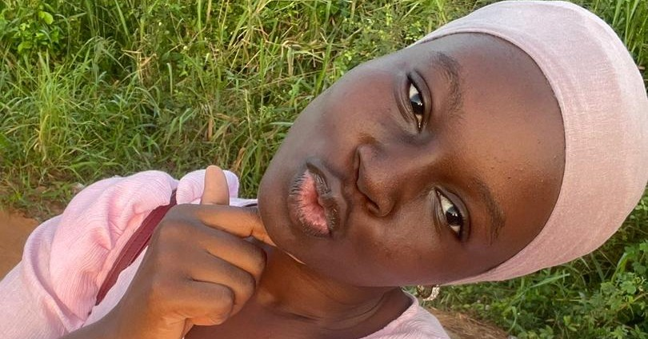
Sources close to the situation report that Rahii's intelligence continues to be slightly concerning. She reads books for fun and somehow makes everyone around her want to read too.
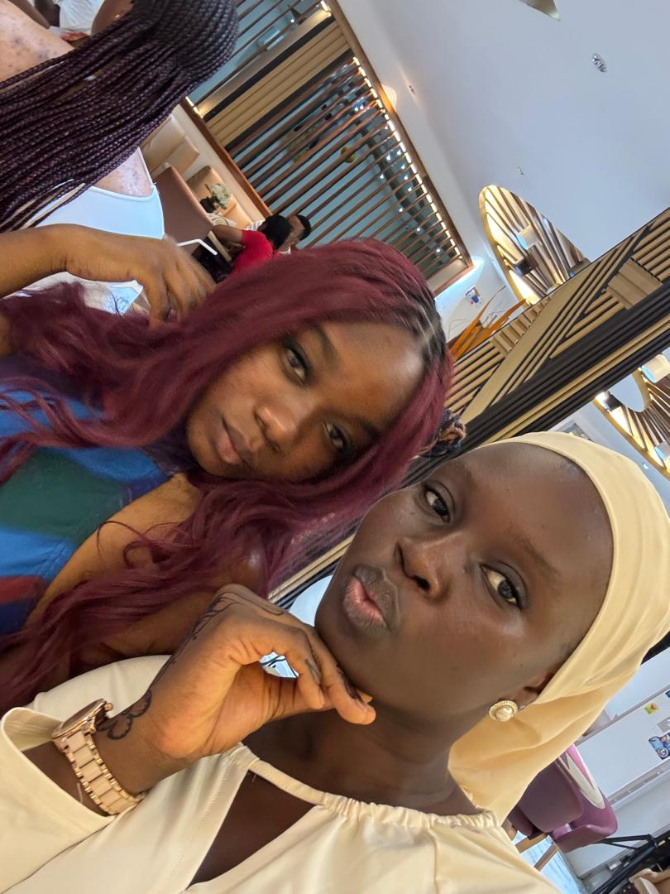
Dear Rahii,
I honestly don't think I say this enough, but I'm so
grateful for you. Thank you for being there for me
through the good days, the bad days, the random days,
and everything in between. Thank you for listening to
me, understanding me, laughing with me, and loving me
even when I'm being difficult.
Our friendship means so much more to me than I could
ever put into words. You've seen different sides of
me, you've watched me grow, and somehow you've
remained by my side through it all. Having someone I
can be completely myself around is something I will
never take for granted.
I pray this new chapter of your life brings you
everything your heart desires. May God bless you
beyond what you imagine, protect you wherever you go,
open doors for you, and fill your life with genuine
happiness, peace, love, and success. You deserve the
absolute best because you have such a beautiful
heart.
I hope you always remember how loved, appreciated,
and special you are — not just today, but every
single day. I'm so proud of the woman you're
becoming, and I can't wait to see all the beautiful
things life has in store for you.
Here's to more memories, more laughter, more crazy
moments, more late-night conversations, and many,
many more birthdays together.
Happy birthday to my beautiful best friend, my safe
place, my person, and one of the greatest blessings
in my life.
With all my love,
Nicho
Where do I even start? 🙈
Rahina was born and raised in Damongo, in the Savannah Region — and she carries that origin with quiet pride. Standing tall at 5'10", with dark, smooth skin that seems to glow and is impossible to miss in any room,is a proud Muslim and beautiful hijabi. But it's not just her presence that draws people in — it's her voice. She speaks her mind freely, boldly, without apology, and somehow always says exactlywhat needs to be said.
She's currently studying Computer Engineering — a program that's anything but easy — and watching her push through it has been one of the proudest things to witness. There was a time I saw her hometown through a narrow lens, until she opened up and shared stories that completely changed how I saw where she came from, and honestly, how I saw her too.
She's a lover of books, a fearless experimenter in the kitchen, and somehow the only person whose jokes are funny because they're NOT FUNNY — though don't tell her that, she still thinks she's hilarious. She mothers everyone around her, pushes people to be braver, and once she sets her mind on something, nothing short of the universe itself can stop her.
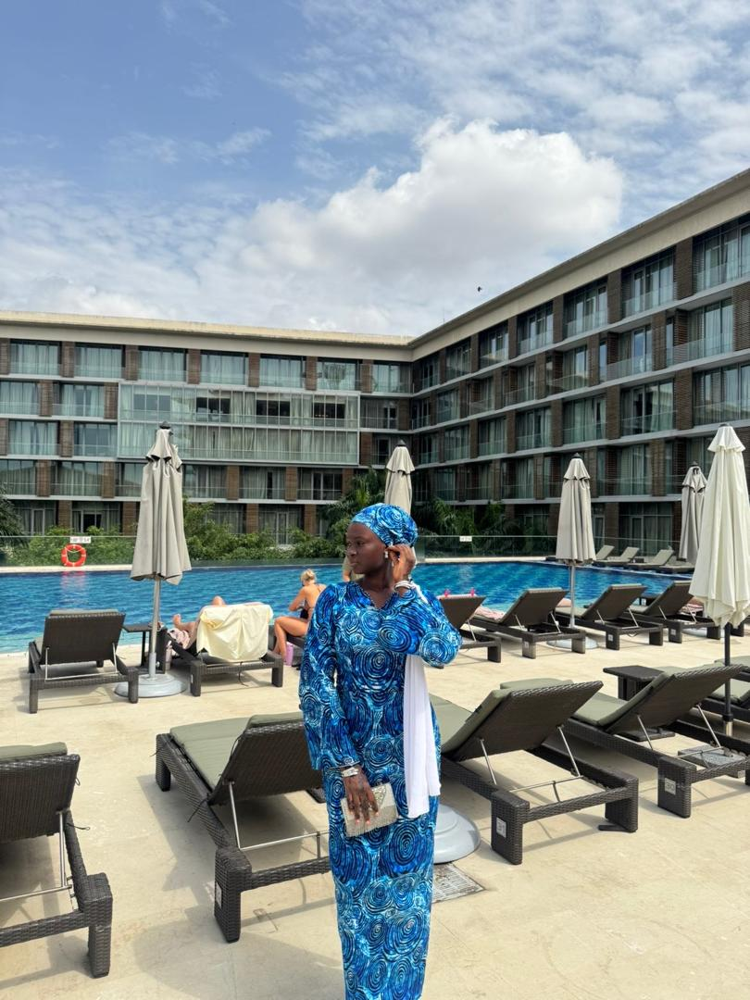
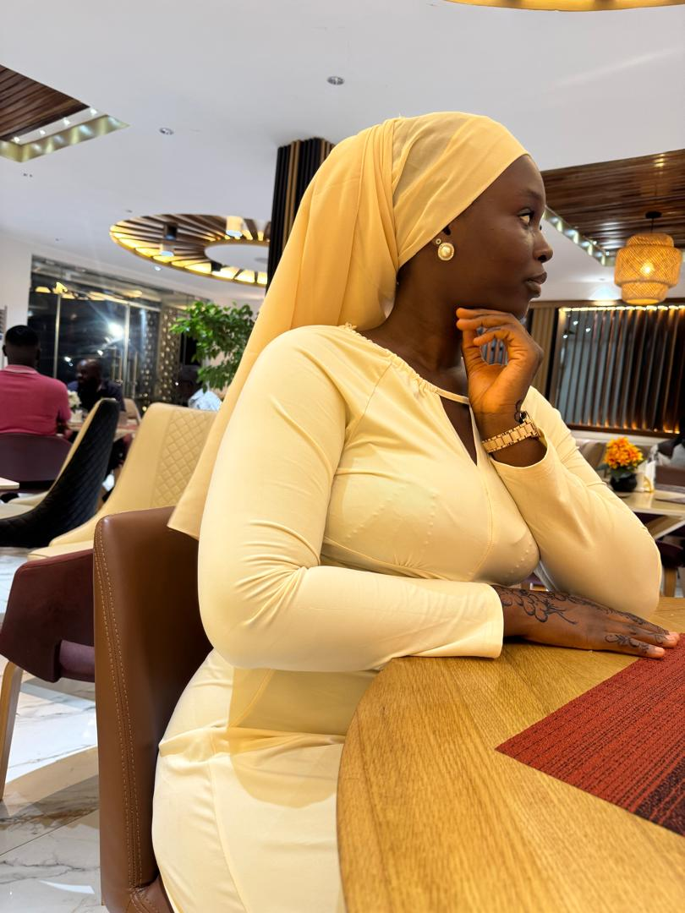
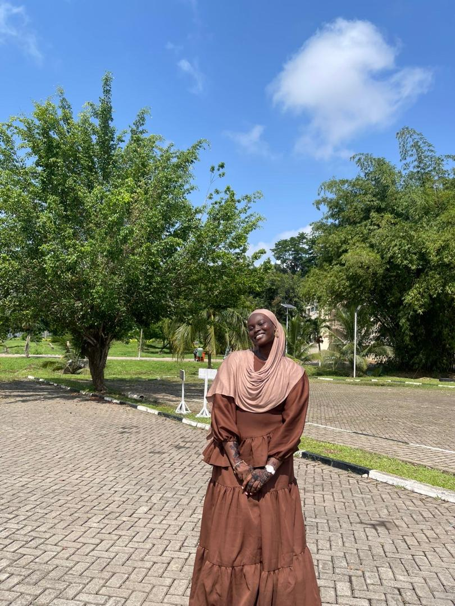
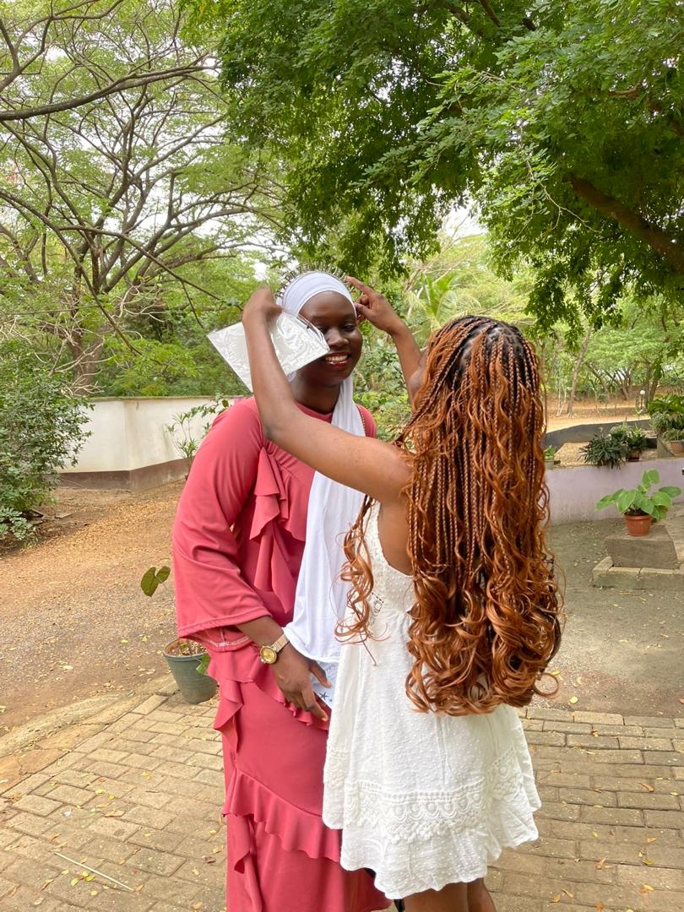
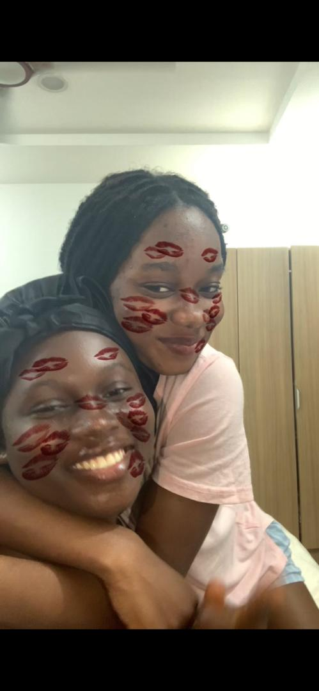
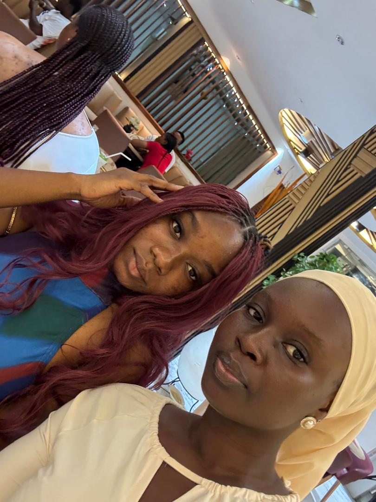
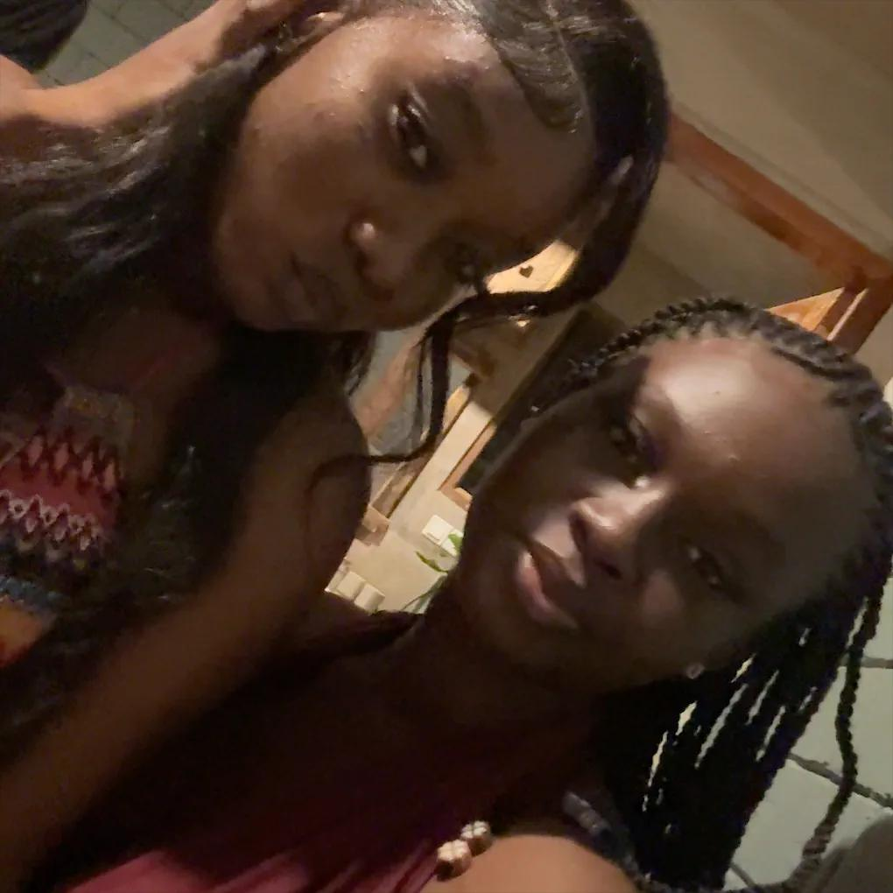
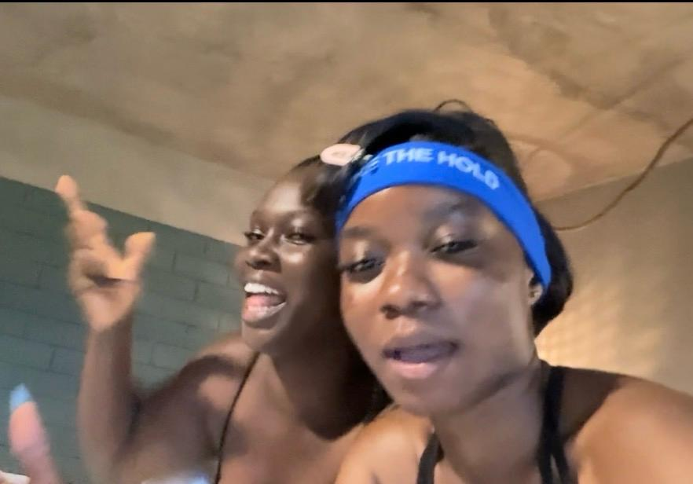
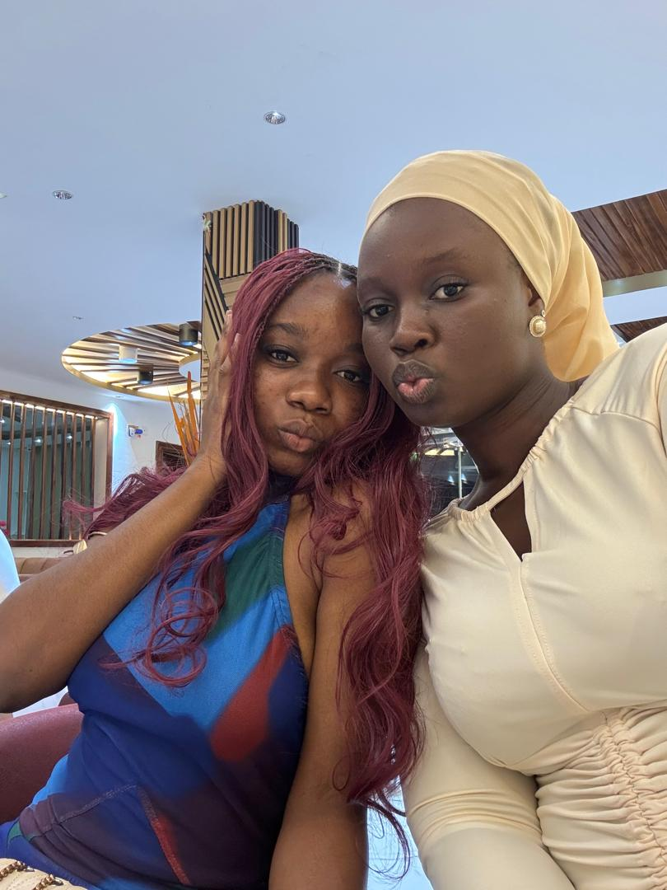
I could honestly go on and on because there are so many things I love about you. I know I might not say it enough or show it as often as I should, but I really do love you so much. You’re genuinely one of the best things that has ever come into my life, and I’m so grateful that I get to call you my best friend. I wouldn’t trade you for anything in this world… well, maybe a lifetime supply of wings, but even then I’d have to think about it.❤️
I love every side of you—the good, the bad, the beautiful, and the slightly annoying 😂. Nobody is perfect, and as much as I adore you, you definitely have your little shortcomings too. So, in the spirit of honesty and because it’s your birthday, here are a few things I don’t particularly like about you. It’s really not that deep though, so don’t start fighting me. 😂❤️
And somehow, none of that changes a thing. You're still one of the realest, most loyal people I know — quirks and all. ♥
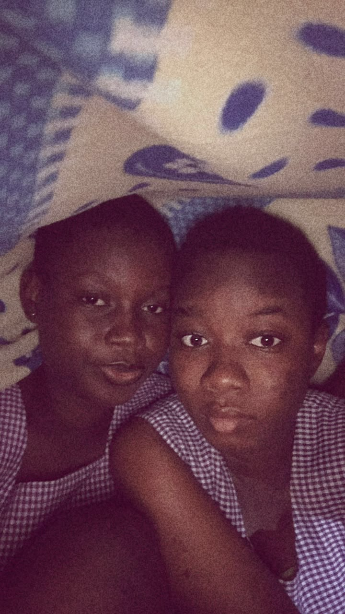
Honestly, I don’t even remember how we met, but I don’t regret meeting you one bit. The tallest girl I know😂. You’ve always made me feel so small and treated me like your child.😂 I remember you crying in class after school one day, and I asked you what was wrong. You told me what happened, which I honestly didn’t expect you to do, and funny enough, I had been through the exact same thing. It felt like we were sharing the same pain, and somehow, that moment brought us even closer. I’ve never been as open with anyone as I am with you. It’s so easy to tell you everything, sometimes without even having to say much, because you just get me. You know my ins and outs, and you’ve seen every version of me. And then there were the times we fought or stopped talking, and I made absolutely no effort to fix things because, honestly, my ego is taller than me😂. But somehow, you always fought to keep our friendship together. You never just let us fall apart, and I’ll always be grateful for that. I don’t know what life has in store for us, or where it’s going to take us, but I’m genuinely happy that I get to spend the rest of my life with you ❤️.
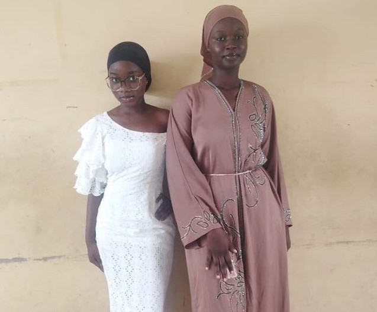
I’ll always cherish every moment I spent in SHS with you. We practically did everything together—washed, bathed, ate together, shared our provisions. We would have even shared our panties if it came to it.😂 I’ll never forget any of it. From all the stories you used to tell me about the North, to the time Nustuga caught us in Estelle’s room, Earnestina’s gari🤣, our late-night eating in the dorm, or the time we stopped talking and literally everyone was trying to get us back together.😂 I don’t want to go too much into everything else, otherwise I’ll just end up repeating everything you already wrote in your birthday message to me. But honestly, I’d always cherish the times we spent together. Those memories will always have a special place in my heart. Maybe one day, years from now, we’ll sit down and tell your kids all these stories and laugh about how crazy we were.😂❤️
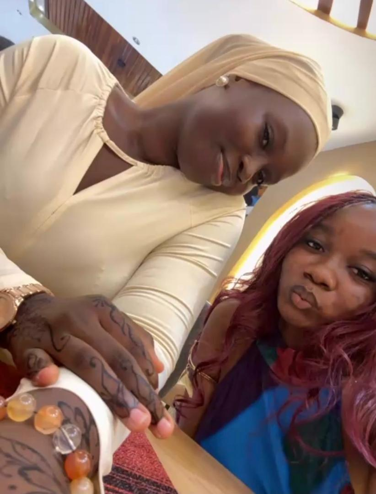
In uni, I know we both had different things going on, and honestly, we barely did much together. I also knew very well that we weren’t exactly happy about me doing things with someone else, and lowkey, it was funny to me🤣 because why would you really think anyone could replace you? Don’t even get me started because you’re always posting different people and writing about how much they mean to you but I none of them can compare to me.😉 So clearly, we both know where I stand.😂 I know we rarely see each other or even take snaps together, and that’s something I’m going to make a conscious effort to change. I want us to make more memories and actually have more moments to look back on. Sometimes, when your things come, you can be very annoying, ngl😭. I know it’s the same for me, but I try my best to overlook it and give you the space you need. At least even it’s better now.😂 But at the end of it all, no matter how busy life gets, how many people we meet, or how much changes around us, I know one thing will always stay the same—it’s always going to be you. Always. ❤️
"I truly consider myself lucky to have you in my life. You’ve shown me how intentional, loud, and beautiful love can be, Masha Allah. You have such a beautiful heart, and I’m grateful for everything you’ve taught me and the standards you’ve helped me set. I pray Allah blesses you with success in your education and career, makes every part of your journey easy, and surrounds you with genuine love, happiness, and kindness. Thank you for always showing up and loving me in ways I never imagined. I love you so much for the sake of Allah, my wife. May you always be blessed with the very best. Happy Birthday, my wife! 🥺 4L 🤞🏾💗"
“To be loved is to be seen.” You changed the way I understand those words. You showed me that love can exist in friendship too—deep, intentional, and meaningful. You've always made me feel understood, accepted and valued without ever making me feel like I’m too much or a burden. You’ve celebrated me in my happiest moments, stood by me in the quieter ones, and always wished the best for me. Your friendship has reminded me that love doesn’t have to be romantic to be profound. Sometimes, it’s simply being known, accepted, encouraged, and cherished. I’m so grateful I get to call you my friend. I love you so much, Boresa, more than words could ever express. I hope you never forget how deeply loved, valued, and cherished you are.
"Happy birthday to my beautiful Rahina! 🥳❤️ You’re such a caring, supportive and amazing friend. I truly appreciate how you’re always checking up on me, giving me advice, and making sure I’m okay. Even though you’re strict sometimes 😂, I know it’s because you genuinely want the best for me. You have such a beautiful heart, and I pray this new year brings you happiness, peace, success, love, and everything you deserve. Keep being the amazing person you are. Happy birthday, Rahina! ❤️🎂✨"
"Some people are chapters in our lives, some are beautiful memories, but a rare few become part of the story our hearts never want to end. You are that person to me. And today, I celebrate the beautiful soul whose existence means more to me than words can say. Meeting you was one of the best things that happened to me, knowing you is knowing that I have someone who is always there for me. You're really at the very heart of my heart. I can't say thank you enough for all you have done, the good and bad advices🤣. Cheers to your new age and creating more memories together. Allah bless you for me, I wish you all you wish for. Love you Moro."
"Ooo how I love you my Moro. This friendship Journey of ours has been filled with nothing but love and happiness. On this very day I celebrate you with heart full of love . You’ve been one of a kind and I appreciate each and everyday you are in my life . May this day bring more years filled with joy , more money and many more . I love you dearly and a Happy birthday to you 🥳😍."
"I just want to thank you for being such an amazing friend to me and for always being there when I need advice and some to talk to. You really are an amazing person and I really appreciate having someone this bold confident and beautiful in my life . Have a good day ❤️🎉"
"Happy birthdayyy man Hater 🥹May Allah bless you with everything your heart desires, protect you, and make this new age one filled with happiness, peace, and plenty plenty money 😂like pounds and dollars and euros and currencies yet to come🤣❤️. I genuinely appreciate having you in my life, and I hope today reminds you how loved and appreciated you are. Enjoy your dayyy,kisses💋💋"
"May life always be as gentle with your heart as your presence has been with the people lucky enough to know you❤️ and may the woman you are becoming always be surrounded by the love, grace, and beautiful moments that remind her just how worthy she is❤️❤️❤️."
"Best yapper I know 😂❤️. I’m genuinely grateful to know you and I wish you nothing but the very best in life. May this new year bring you happiness, success, peace and everything your heart desires. And of course, I’m still waiting for that next round of fufu you cooked 😂. Happy birthday, Miss Moro! 🥳❤️"
"Miss Moro, We've had our fair share of moments, and as far as first impressions go you could say we got of to a bit of a rocky start. But over the past couple of months our interactions have gotten more innate. Which has brought me closer to knowing who you are and what you stand for. And even though we seem to always stand on opposite sides of most social debates lol, now all I feel is admiration towards you. For how you come through for friends, defending your ideals just as fiercely as you show your support for others. I've come to admire the person you are and wish you all the best on this special day. _Kull'aam wa anta bit khair_ PS-Kuubu"
"Rahina Moro, a friend I thought would never have but time has made come to love the woman you are, bold and not afraid to express your opinions and I'm lucky to have you as a friend frfr, May God bless you and all your heart desires come to pass😊🥂"
"happy birthday to one of the most outspoken people i know. i admire how openly you express your thoughts, how confidently you stand by whatever you say, and how youre never afraid to speak honestly. your willingness to be direct and genuine is something that makes you stand out to me the most. i hope this new age is kind to you .i hope you get to experience more of the things that make you genuinely happy, and that you become even more of the person youre trying to be. im glad i got to know you, and i hope you dont lose the parts of yourself that make you who you are. you deserve a year that gives you a lot of reasons to make you smile and i pray this one is that. have a wonderful birthday HAJIA . enjoy 🎉💕your day."
"Happy birthday Rahina ❤️ Stay exactly as real and straightforward as you are. Wishing you more life, more money and less stress. Enjoy your day!"
THE DAILY RAHII
BREAKING NEWS
Local sources confirm that she remains beautiful, intelligent, slightly impatient, and unfortunately still stuck with me.
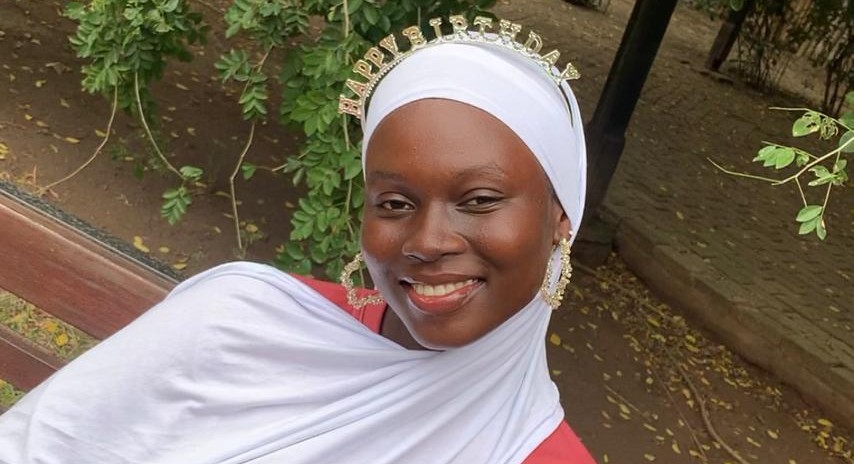
ABOVE: Rahii looking completely unaware of the amount of chaos she has brought into my life.
In a shocking but unsurprising development, Rahii has officially made it another year around the sun.
Friends describe her as extremely smart, caring, determined and occasionally impossible to argue with.
Experts have also confirmed that she possesses an unusually strong ability to tell very long stories.

Sources close to the situation report that Rahii's intelligence continues to be slightly concerning. She reads books for fun and somehow makes everyone around her want to read too.
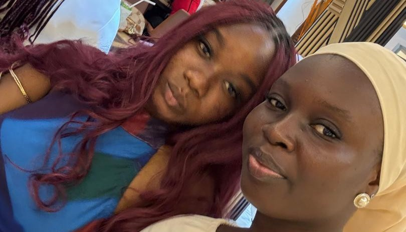
Despite numerous disagreements, questionable jokes and my own nonchalant behaviour, the friendship continues to survive.
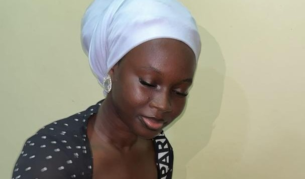
Rahii continues to make jokes that are technically not funny. However, investigators have confirmed that they somehow become funny anyway.
This year, she will experience excessive happiness, questionable decisions, unforgettable memories, and at least one moment where she says "I can't believe this is my life."
She will finally finish a book she's been putting off, immediately start three new ones, and somehow still talk about all of them like she finished every page.
Her patience will be tested at least once a week — and she will pass approximately none of those tests, and it will still somehow be entertaining to watch.
Great things are coming for her — in love, in her career, in her friendships, and in the quiet, ordinary moments that end up mattering the most. This is her year.
Dear Rahii,
I knew I wouldn’t be able to make it to your birthday, and honestly, I was really sad about it. I wanted your gift to be something intentional. You’d mentioned that you wanted abayas, and I really wanted to get you one in your favourite colour, but those prices??? 😭 I had to humble myself and settle for a cheaper one.
You’ve also been forcing me to come and learn how to code and create websites, but knowing me, I never came. 🤣 I knew people who made those beautiful hard-copy birthday magazines, and I thought, why not create one digitally, using something you’re actually good at? And that’s how I came up with the idea of making you a birthday magazine.
I can’t even take all the credit because Chat and Claude helped me substantially 😭🤣, but I really hope you love it. And honestly, something funny came out of this too because I’ve managed to come up with a business idea. Instead of people paying for hard-copy magazines, I could create personalised website magazines for them. So technically, you might have inspired my next business. 😂
To the prettiest, smartest, sexiest and kindest girl I know, I’m so lucky to have met someone like you. You’re genuinely such a good friend. You’re thoughtful and intentional, and you go to such great lengths to do things for me and make me feel loved.
Seven years of friendship, and somehow, this is still the most genuine and beautiful love I could ever experience in a friendship. You’ve been through so much, and somehow, every year, you become an even better version of yourself. You’re fierce, bold, determined and unapologetically yourself, and I’m not even going to lie, I really look up to you.
This year, I pray for nothing but the very best for you. May Allah truly bless you, guide you, protect you and grant you everything your heart desires. May you succeed in everything you put your mind to, and may all the beautiful things you deserve find their way to you.
I’m so proud of the woman you’re becoming, and I genuinely feel blessed beyond measure to have you as my best friend. Seven years down, and I hope we have so many more years of annoying each other, laughing at the stupidest things, making memories and watching each other grow.
Happy birthday, Hajia. ❤️ I love you so, so much. And one day, when I’m rich, I’ll buy you that Porsche. I knew I wouldn’t be able to make it to your birthday, and honestly, I was really sad about it. I wanted your gift to be something intentional. You’d mentioned that you wanted abayas, and I really wanted to get you one in your favourite colour, but those prices??? 😭 I had to humble myself and settle for a cheaper one. 🤣
You’ve also been forcing me to come and learn how to code and create websites, but knowing me, I never came. 🤣 I knew people who made those beautiful hard-copy birthday magazines, and I thought, why not create one digitally, using something you’re actually good at? And that’s how I came up with the idea of making you a birthday magazine.
I can’t even take all the credit because Chat and Claude helped me substantially 😭🤣, but I really hope you love it. And honestly, something funny came out of this too because I’ve managed to come up with a business idea. Instead of people paying for hard-copy magazines, I could create personalised website magazines for them. So technically, you might have inspired my next business. 😂
To the prettiest, smartest, sexiest and kindest girl I know, I’m so lucky to have met someone like you. You’re genuinely such a good friend. You’re thoughtful and intentional, and you go to such great lengths to do things for me and make me feel loved.
Seven years of friendship, and somehow, this is still the most genuine and beautiful love I could ever experience in a friendship. You’ve been through so much, and somehow, every year, you become an even better version of yourself. You’re fierce, bold, determined and unapologetically yourself, and I’m not even going to lie, I really look up to you.
This year, I pray for nothing but the very best for you. May Allah truly bless you, guide you, protect you and grant you everything your heart desires. May you succeed in everything you put your mind to, and may all the beautiful things you deserve find their way to you.
I’m so proud of the woman you’re becoming, and I genuinely feel blessed beyond measure to have you as my best friend. Seven years down, and I hope we have so many more years of annoying each other, laughing at the stupidest things, making memories and watching each other grow.
Happy birthday, Hajia. ❤️ I love you so, so much. And one day, when I’m rich, I’ll buy you that Porsche❤️
Bestfriends Forever,
Nicho
of this issue, not our story.
♡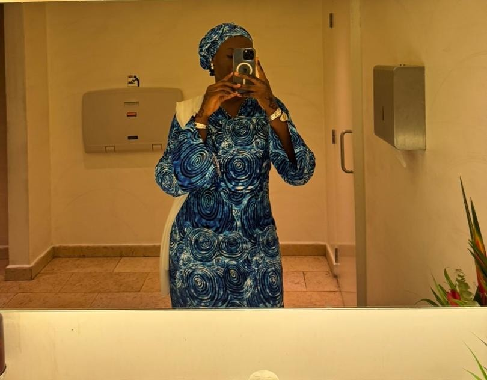
Same girl.
Bigger dreams.
Another year.
♡ Smart
♥ Beautiful
♡ Kind
♥ Determined
♥ Funny (even when your jokes aren't)
♡ A great storyteller
♥ A friend for life
LIMITED EDITION
SMART • BEAUTIFUL • KIND • FEARLESS
CURRENTLY OWNED BY HER BEST FRIEND.
NO RETURNS. NO EXCHANGES.
♥